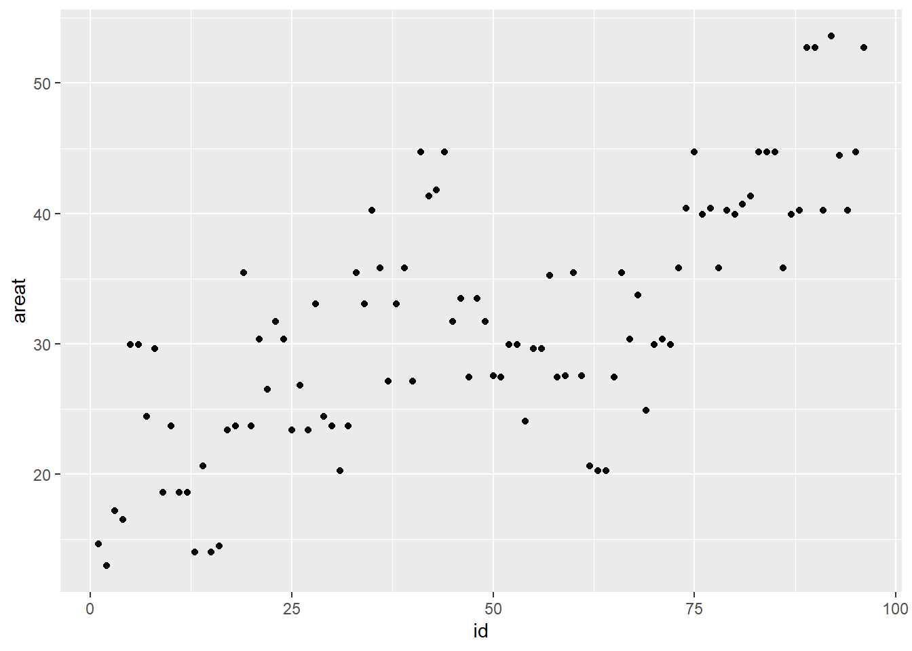
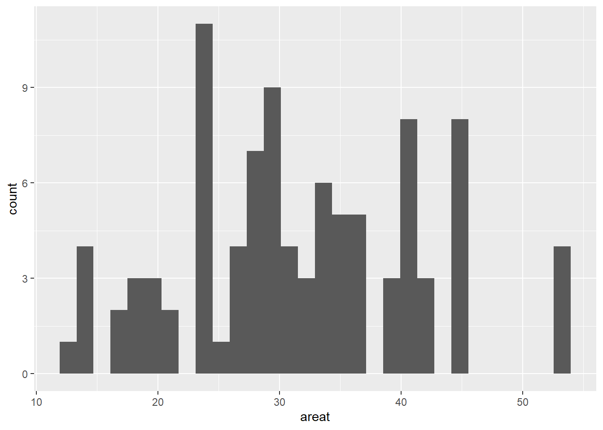
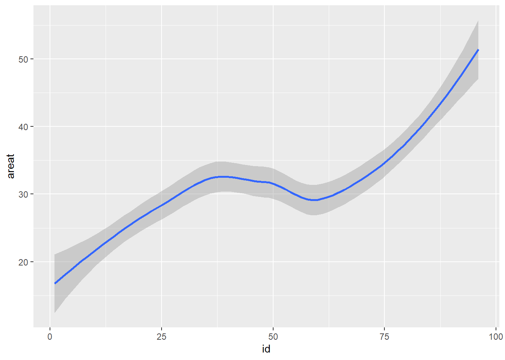
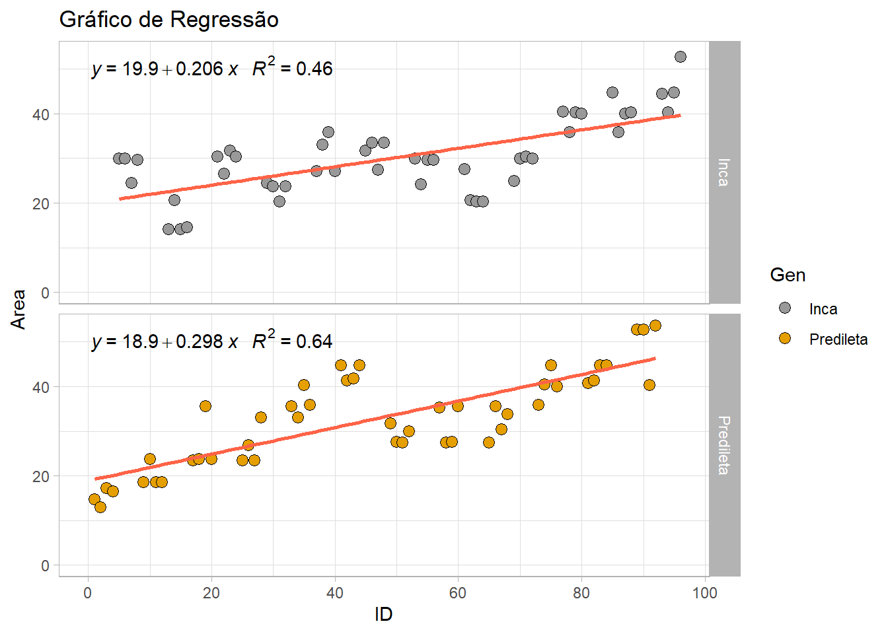
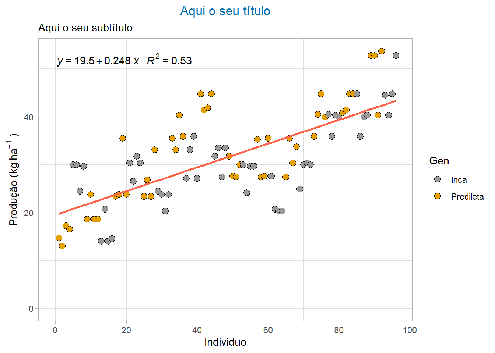
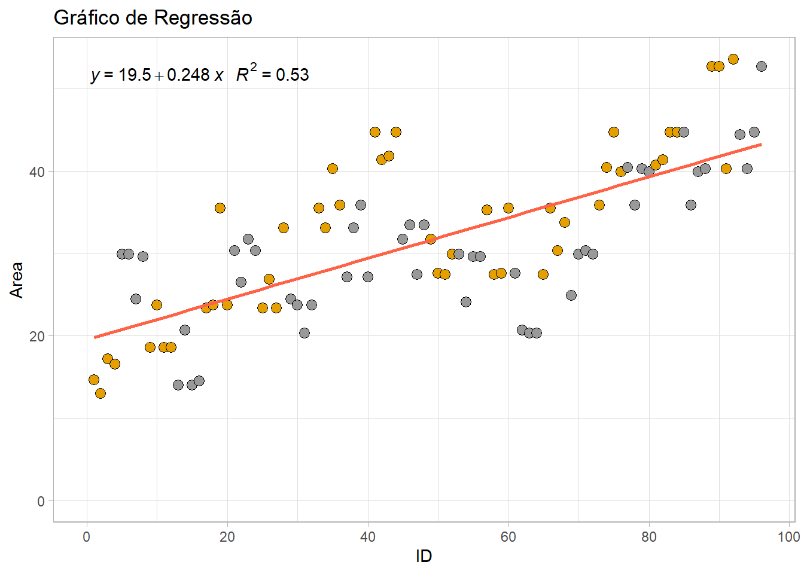
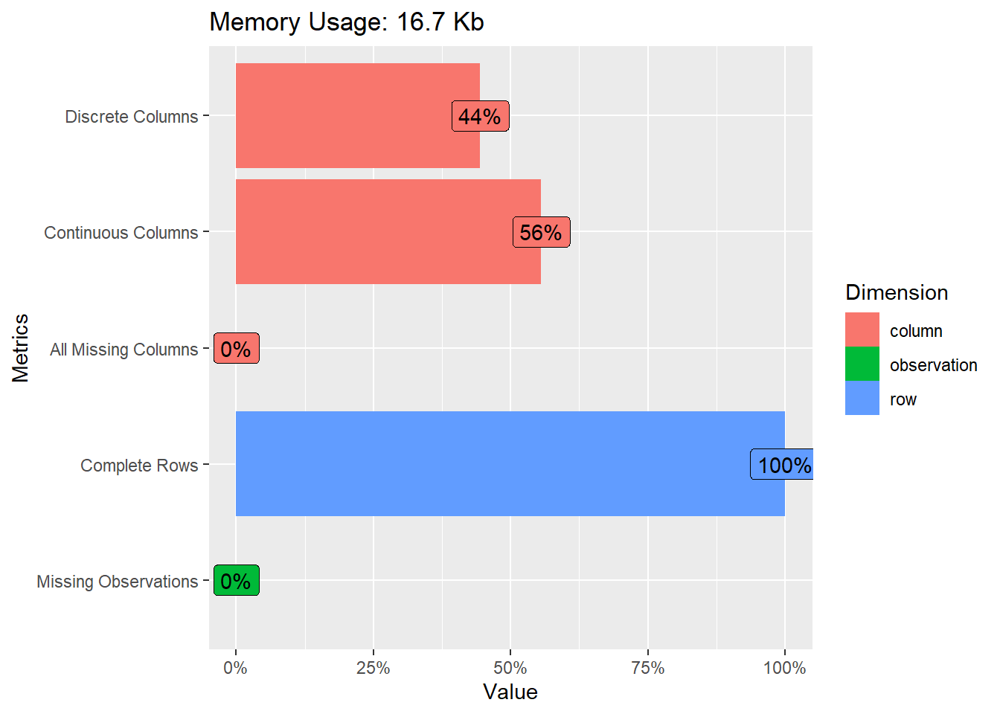
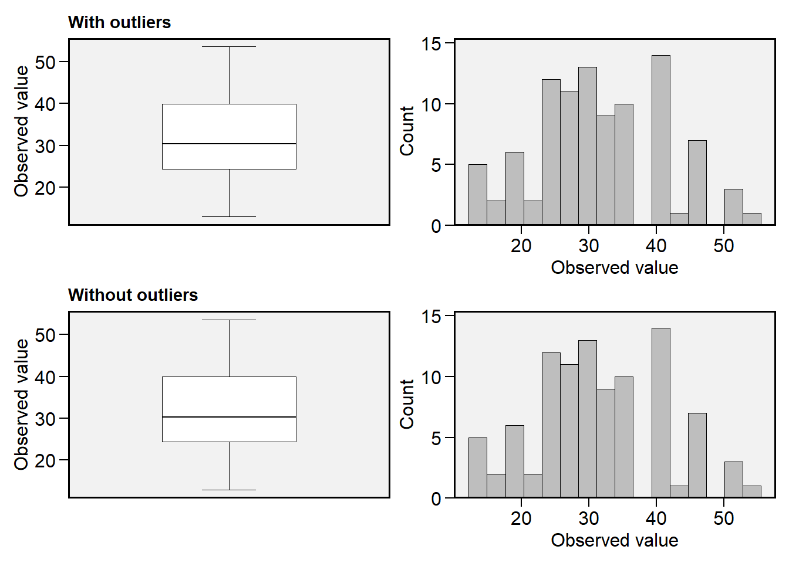

Last updated: 2022-11-15
Checks: 6 1
Knit directory:
Manipulacao-dados-e-Analise-Grafica-R/
This reproducible R Markdown analysis was created with workflowr (version 1.7.0). The Checks tab describes the reproducibility checks that were applied when the results were created. The Past versions tab lists the development history.
The R Markdown file has unstaged changes. To know which version of
the R Markdown file created these results, you’ll want to first commit
it to the Git repo. If you’re still working on the analysis, you can
ignore this warning. When you’re finished, you can run
wflow_publish to commit the R Markdown file and build the
HTML.
Great job! The global environment was empty. Objects defined in the global environment can affect the analysis in your R Markdown file in unknown ways. For reproduciblity it’s best to always run the code in an empty environment.
The command set.seed(20220826) was run prior to running
the code in the R Markdown file. Setting a seed ensures that any results
that rely on randomness, e.g. subsampling or permutations, are
reproducible.
Great job! Recording the operating system, R version, and package versions is critical for reproducibility.
Nice! There were no cached chunks for this analysis, so you can be confident that you successfully produced the results during this run.
Great job! Using relative paths to the files within your workflowr project makes it easier to run your code on other machines.
Great! You are using Git for version control. Tracking code development and connecting the code version to the results is critical for reproducibility.
The results in this page were generated with repository version 5c6cf18. See the Past versions tab to see a history of the changes made to the R Markdown and HTML files.
Note that you need to be careful to ensure that all relevant files for
the analysis have been committed to Git prior to generating the results
(you can use wflow_publish or
wflow_git_commit). workflowr only checks the R Markdown
file, but you know if there are other scripts or data files that it
depends on. Below is the status of the Git repository when the results
were generated:
Ignored files:
Ignored: .Rproj.user/
Unstaged changes:
Modified: analysis/Tutorial.Rmd
Deleted: analysis/Tutorial_cache/html/__globals
Deleted: analysis/Tutorial_cache/html/__objects
Deleted: analysis/Tutorial_cache/html/__packages
Deleted: analysis/Tutorial_cache/html/session-info-chunk-inserted-by-workflowr_39e77ec4e4e24071c6198b66644d04dc.RData
Deleted: analysis/Tutorial_cache/html/unnamed-chunk-10_5d700cc04ecbd56e5cba4f7b0f514262.RData
Deleted: analysis/Tutorial_cache/html/unnamed-chunk-11_e618cec3ebb42aae668ba4c2a9a741ed.RData
Deleted: analysis/Tutorial_cache/html/unnamed-chunk-12_677ec995d44983fdab729531c297ed4a.RData
Deleted: analysis/Tutorial_cache/html/unnamed-chunk-13_85555365b482653f03668eea7c9d3f12.RData
Deleted: analysis/Tutorial_cache/html/unnamed-chunk-14_8ad3912482174714390a445e0fd762bb.RData
Deleted: analysis/Tutorial_cache/html/unnamed-chunk-15_52630bf16a81b49dc2fb93600873e5bc.RData
Deleted: analysis/Tutorial_cache/html/unnamed-chunk-16_b2c82f8ecb294d71b6f8945151e938b4.RData
Deleted: analysis/Tutorial_cache/html/unnamed-chunk-17_51c21af285107b888ee09717a9dc6d71.RData
Deleted: analysis/Tutorial_cache/html/unnamed-chunk-18_e49eb62dbfc54028b8038a6fd4d9e22c.RData
Deleted: analysis/Tutorial_cache/html/unnamed-chunk-19_3cf64526b945d4ea3014e97f6b8dfd77.RData
Deleted: analysis/Tutorial_cache/html/unnamed-chunk-1_05c116ec03587effd80a5fbcca99aec6.RData
Deleted: analysis/Tutorial_cache/html/unnamed-chunk-20_16a52e0541d62c48ea04e85537c711da.RData
Deleted: analysis/Tutorial_cache/html/unnamed-chunk-21_c775e3feffee9cc7d713d0b08d2b7797.RData
Deleted: analysis/Tutorial_cache/html/unnamed-chunk-22_efc54ca034c695582a077dbc0b72f8e6.RData
Deleted: analysis/Tutorial_cache/html/unnamed-chunk-23_db7a2c5aa55a9b6aa3e106d91b248dc9.RData
Deleted: analysis/Tutorial_cache/html/unnamed-chunk-24_50a37f7e1a605ceddc13271b55eb5a53.RData
Deleted: analysis/Tutorial_cache/html/unnamed-chunk-25_3615c9b28cb383a6e6b99ca05745e546.RData
Deleted: analysis/Tutorial_cache/html/unnamed-chunk-26_b3f299ee9132672cca046427bd56ed04.RData
Deleted: analysis/Tutorial_cache/html/unnamed-chunk-27_88d5c3c043df023ec7ed524a08ac1d42.RData
Deleted: analysis/Tutorial_cache/html/unnamed-chunk-28_8ee73e0ae4420d262028ee772dcd0f95.RData
Deleted: analysis/Tutorial_cache/html/unnamed-chunk-29_248d34ff840bc15734ad1e0549a68854.RData
Deleted: analysis/Tutorial_cache/html/unnamed-chunk-2_ab2f09919036245c2250e4532406e7e1.RData
Deleted: analysis/Tutorial_cache/html/unnamed-chunk-30_cf17d2a7580b6a7023babec510ce7835.RData
Deleted: analysis/Tutorial_cache/html/unnamed-chunk-31_32a61356b411c1505f986f214581f1ad.RData
Deleted: analysis/Tutorial_cache/html/unnamed-chunk-32_964e8749b126823363f63d7450be2160.RData
Deleted: analysis/Tutorial_cache/html/unnamed-chunk-33_a88c27715f405bba786d75ee4ce06797.RData
Deleted: analysis/Tutorial_cache/html/unnamed-chunk-34_e24a03f8b918e32db24e37b9eb24e80d.RData
Deleted: analysis/Tutorial_cache/html/unnamed-chunk-35_7da52ce48bd7f28183547383a80f7aa4.RData
Deleted: analysis/Tutorial_cache/html/unnamed-chunk-36_2b64ceb9ddfc82129c5c0c850a5928d9.RData
Deleted: analysis/Tutorial_cache/html/unnamed-chunk-37_4c136dcdfb175fe7415d31dd32c03691.RData
Deleted: analysis/Tutorial_cache/html/unnamed-chunk-38_df951bfd23ba4da3b14e74d152ae8cb3.RData
Deleted: analysis/Tutorial_cache/html/unnamed-chunk-39_e1e2e91d2adad6da32e7fb4e5a306c50.RData
Deleted: analysis/Tutorial_cache/html/unnamed-chunk-3_a592597c1c0468a8cef88d14281cccf0.RData
Deleted: analysis/Tutorial_cache/html/unnamed-chunk-40_6a5bd13c78bb3b906c0f19790f736dbc.RData
Deleted: analysis/Tutorial_cache/html/unnamed-chunk-41_bbd987a46b15c5b786073bcfb75f9731.RData
Deleted: analysis/Tutorial_cache/html/unnamed-chunk-42_883b6bd2b9cb3016de9a7365ace66a0e.RData
Deleted: analysis/Tutorial_cache/html/unnamed-chunk-43_a83a7c6d878f895c4eb8beab8b5f5f35.RData
Deleted: analysis/Tutorial_cache/html/unnamed-chunk-44_0e217f6f7cf920a64d40e4b4012a6c36.RData
Deleted: analysis/Tutorial_cache/html/unnamed-chunk-45_2d012027cd643b1121d7228192bac2db.RData
Deleted: analysis/Tutorial_cache/html/unnamed-chunk-46_384274d9cdaaba7fc9f3ac09e9187645.RData
Deleted: analysis/Tutorial_cache/html/unnamed-chunk-4_da037b7c1f22615918226fa093c74ebc.RData
Deleted: analysis/Tutorial_cache/html/unnamed-chunk-5_6785d4f33de99a450ff8497b625fbc63.RData
Deleted: analysis/Tutorial_cache/html/unnamed-chunk-6_c01fde74468faf7a30e3761f0a065768.RData
Deleted: analysis/Tutorial_cache/html/unnamed-chunk-7_5cb161469e14d5f100a2c51766507ac2.RData
Deleted: analysis/Tutorial_cache/html/unnamed-chunk-8_a05ccaef8ba963263c0332b800e7298f.RData
Deleted: analysis/Tutorial_cache/html/unnamed-chunk-9_90953a1306f15b6899b616688eb19935.RData
Modified: analysis/_site.yml
Modified: analysis/about.Rmd
Modified: analysis/analise-grafica.Rmd
Deleted: analysis/analise-grafica_cache/html/__globals
Deleted: analysis/analise-grafica_cache/html/__objects
Deleted: analysis/analise-grafica_cache/html/__packages
Deleted: analysis/analise-grafica_cache/html/session-info-chunk-inserted-by-workflowr_facb8e93a72c00b9777b28ce546eaf13.RData
Deleted: analysis/analise-grafica_cache/html/unnamed-chunk-10_206890308a684fcd46abbf982bb24000.RData
Deleted: analysis/analise-grafica_cache/html/unnamed-chunk-11_39dc6a0e4cf3bf097d142871e9c116fe.RData
Deleted: analysis/analise-grafica_cache/html/unnamed-chunk-12_0815f8aeb8b52340f7dcf6f44a5d6977.RData
Deleted: analysis/analise-grafica_cache/html/unnamed-chunk-13_72ce879ebf950222e6c841eccc0cba64.RData
Deleted: analysis/analise-grafica_cache/html/unnamed-chunk-14_91c6820876976fca85833fb96ef19246.RData
Deleted: analysis/analise-grafica_cache/html/unnamed-chunk-15_4f5130d492046c0d197d63d347b701ab.RData
Deleted: analysis/analise-grafica_cache/html/unnamed-chunk-16_22fe9f4f9ad58bbd8df22afdfac5e07b.RData
Deleted: analysis/analise-grafica_cache/html/unnamed-chunk-17_e889d16aa69e9c794b985898dad2c4ba.RData
Deleted: analysis/analise-grafica_cache/html/unnamed-chunk-18_3bf1639087a6f08cd11bc8fbfe2894ce.RData
Deleted: analysis/analise-grafica_cache/html/unnamed-chunk-19_a757cfe20b21df538a762f49b4e6e89c.RData
Deleted: analysis/analise-grafica_cache/html/unnamed-chunk-1_f00595bd22695017ee90704a77ad22f7.RData
Deleted: analysis/analise-grafica_cache/html/unnamed-chunk-20_629b3a9ff466dadc9a8e68b74f085534.RData
Deleted: analysis/analise-grafica_cache/html/unnamed-chunk-21_01a2141f497a66105a2764201dde0201.RData
Deleted: analysis/analise-grafica_cache/html/unnamed-chunk-22_410ac0b82053d9df2e246ea93e4339d8.RData
Deleted: analysis/analise-grafica_cache/html/unnamed-chunk-23_a1cd4698f2c88de740d088f6310e3c67.RData
Deleted: analysis/analise-grafica_cache/html/unnamed-chunk-24_f18ef3a0d549df95e101d25fb6e138e3.RData
Deleted: analysis/analise-grafica_cache/html/unnamed-chunk-25_28bad1b99b3b71eb4392b2260b802d40.RData
Deleted: analysis/analise-grafica_cache/html/unnamed-chunk-26_fea6f04794533b81cb7973a294a3f657.RData
Deleted: analysis/analise-grafica_cache/html/unnamed-chunk-27_80c06a6f53a8c522ec52445d51c25f75.RData
Deleted: analysis/analise-grafica_cache/html/unnamed-chunk-28_f28b17e2246736ab17bfcf53e495153f.RData
Deleted: analysis/analise-grafica_cache/html/unnamed-chunk-29_66bc8fc685da5ef16e662363166e82ea.RData
Deleted: analysis/analise-grafica_cache/html/unnamed-chunk-2_840ba46fc34c674d6f170173e18e2fcd.RData
Deleted: analysis/analise-grafica_cache/html/unnamed-chunk-30_5d74c89a8cae85e22a2414270c8a7dbf.RData
Deleted: analysis/analise-grafica_cache/html/unnamed-chunk-31_6476d018158e3f58ff272b2a497da0f3.RData
Deleted: analysis/analise-grafica_cache/html/unnamed-chunk-32_d481a1f55efb90259435f2a7307b8f02.RData
Deleted: analysis/analise-grafica_cache/html/unnamed-chunk-33_34e4ff67da5d451d59b0b45bc8aec631.RData
Deleted: analysis/analise-grafica_cache/html/unnamed-chunk-34_36ac024ea6df234aa9c184afd9564259.RData
Deleted: analysis/analise-grafica_cache/html/unnamed-chunk-35_e91b1ad90188c19eb700a37f8cd06b26.RData
Deleted: analysis/analise-grafica_cache/html/unnamed-chunk-36_f1b6768b75ba0b604bf56f3badaf2940.RData
Deleted: analysis/analise-grafica_cache/html/unnamed-chunk-37_2decb112c8c1e6cb53f10a2f09c78170.RData
Deleted: analysis/analise-grafica_cache/html/unnamed-chunk-38_cc9c1382630210ceb5473970e422854e.RData
Deleted: analysis/analise-grafica_cache/html/unnamed-chunk-39_c23b66d6977125399b11f232b342b23c.RData
Deleted: analysis/analise-grafica_cache/html/unnamed-chunk-3_de354d1aebc4feeeff942c066ab9a829.RData
Deleted: analysis/analise-grafica_cache/html/unnamed-chunk-40_41ce386c92ff67ec95269dab1d41e631.RData
Deleted: analysis/analise-grafica_cache/html/unnamed-chunk-41_330ea16c357bcaa561c8884155ff0791.RData
Deleted: analysis/analise-grafica_cache/html/unnamed-chunk-42_18cfdd267073bbba0bcb15fd66bd48d3.RData
Deleted: analysis/analise-grafica_cache/html/unnamed-chunk-43_976c32701068e1f3aad3c2de8ee73c68.RData
Deleted: analysis/analise-grafica_cache/html/unnamed-chunk-44_cb682b840df159c75d47843a4890a287.RData
Deleted: analysis/analise-grafica_cache/html/unnamed-chunk-45_2a70a8725fe4e3bf3463fd0f3413d26c.RData
Deleted: analysis/analise-grafica_cache/html/unnamed-chunk-46_a76732ddef0c3d36b7bfaac6870c9a1b.RData
Deleted: analysis/analise-grafica_cache/html/unnamed-chunk-47_1d8615f2894ef3b693957532350c3cce.RData
Deleted: analysis/analise-grafica_cache/html/unnamed-chunk-48_76c2cdd5493a85d0044dc5c99cffdd05.RData
Deleted: analysis/analise-grafica_cache/html/unnamed-chunk-49_aeccb87608249ad0131ec11da5dd6e1b.RData
Deleted: analysis/analise-grafica_cache/html/unnamed-chunk-4_893cf17c376749aba5452dc82f571dcb.RData
Deleted: analysis/analise-grafica_cache/html/unnamed-chunk-50_6cf4671a8a3deaa1d04b5f74e8a372a5.RData
Deleted: analysis/analise-grafica_cache/html/unnamed-chunk-51_9d77613272d1c9cee7dd5b326d88cd4c.RData
Deleted: analysis/analise-grafica_cache/html/unnamed-chunk-5_c5783974c2686745f1557972908154d3.RData
Deleted: analysis/analise-grafica_cache/html/unnamed-chunk-6_7b37aaab323ad1e2bbba3c31aac011e3.RData
Deleted: analysis/analise-grafica_cache/html/unnamed-chunk-7_59ba06a9d3dfacd317633a4a52bd1392.RData
Deleted: analysis/analise-grafica_cache/html/unnamed-chunk-8_27498a7f2a27d917fcde75b1fb145479.RData
Deleted: analysis/analise-grafica_cache/html/unnamed-chunk-9_271f89d6093519b7257adf0c039f7387.RData
Modified: analysis/index.Rmd
Deleted: analysis/index_cache/html/__globals
Deleted: analysis/index_cache/html/__objects
Deleted: analysis/index_cache/html/__packages
Deleted: analysis/index_cache/html/session-info-chunk-inserted-by-workflowr_54bfedccea8b7e7d61fc7fca6bcc2241.RData
Modified: analysis/introducao-r.Rmd
Modified: analysis/license.Rmd
Modified: analysis/manipulacaodedados.Rmd
Deleted: analysis/manipulacaodedados_cache/html/__globals
Deleted: analysis/manipulacaodedados_cache/html/__objects
Deleted: analysis/manipulacaodedados_cache/html/__packages
Deleted: analysis/manipulacaodedados_cache/html/session-info-chunk-inserted-by-workflowr_416d01b0b6e37ea2f9cf30071ecf6d3b.RData
Deleted: analysis/manipulacaodedados_cache/html/unnamed-chunk-10_fd0fe17f39a78c1bcff1908913b73b0b.RData
Deleted: analysis/manipulacaodedados_cache/html/unnamed-chunk-11_eeebf5e25a12e49e078381cb2ca7e6b6.RData
Deleted: analysis/manipulacaodedados_cache/html/unnamed-chunk-12_ae77a1007b57162d5ee9b2f7c8892c19.RData
Deleted: analysis/manipulacaodedados_cache/html/unnamed-chunk-13_97b3ad301e30520f72f171b0f2bc5d1d.RData
Deleted: analysis/manipulacaodedados_cache/html/unnamed-chunk-14_8df02393b7c6b77359726d23b4544624.RData
Deleted: analysis/manipulacaodedados_cache/html/unnamed-chunk-15_c3b38ddfc5ec89141db37d06a6c2062f.RData
Deleted: analysis/manipulacaodedados_cache/html/unnamed-chunk-16_eca8e81e94d37902cbc341ceb705143f.RData
Deleted: analysis/manipulacaodedados_cache/html/unnamed-chunk-17_26dadc17fd32b1d0573bf810faceeeaa.RData
Deleted: analysis/manipulacaodedados_cache/html/unnamed-chunk-18_1155afacbd1816b7fd151952fc2d80cf.RData
Deleted: analysis/manipulacaodedados_cache/html/unnamed-chunk-19_25245b0107bba9a621363440299577af.RData
Deleted: analysis/manipulacaodedados_cache/html/unnamed-chunk-1_9a07137184ec908fe07ea0a572cb6755.RData
Deleted: analysis/manipulacaodedados_cache/html/unnamed-chunk-20_98343bba74135be0a35f227e681855b2.RData
Deleted: analysis/manipulacaodedados_cache/html/unnamed-chunk-21_5f3ac6face900705bb13562762fac3f2.RData
Deleted: analysis/manipulacaodedados_cache/html/unnamed-chunk-22_24e054a280f2d8f6e963d999c6d01f6d.RData
Deleted: analysis/manipulacaodedados_cache/html/unnamed-chunk-23_8869148d8eac18e22a5633f8f8c0befb.RData
Deleted: analysis/manipulacaodedados_cache/html/unnamed-chunk-24_6daac7438b96922e218bc77086ab5cda.RData
Deleted: analysis/manipulacaodedados_cache/html/unnamed-chunk-25_55c457b948919c2e7426750e245ca1ec.RData
Deleted: analysis/manipulacaodedados_cache/html/unnamed-chunk-26_8ac5276625a143701148a4098c416715.RData
Deleted: analysis/manipulacaodedados_cache/html/unnamed-chunk-27_283945c95111e6b1707475b412a6e20e.RData
Deleted: analysis/manipulacaodedados_cache/html/unnamed-chunk-28_f9c20edd31e6b60da42bc459364667d4.RData
Deleted: analysis/manipulacaodedados_cache/html/unnamed-chunk-29_fb5241bba1f58a8ed02d2aac0d0da820.RData
Deleted: analysis/manipulacaodedados_cache/html/unnamed-chunk-2_ab8030907a2a6ae5fc99ccdef427333f.RData
Deleted: analysis/manipulacaodedados_cache/html/unnamed-chunk-30_043c3f2b153cffc2b4c37f59a793f4a6.RData
Deleted: analysis/manipulacaodedados_cache/html/unnamed-chunk-31_af249045006699523b2c6a507df10f66.RData
Deleted: analysis/manipulacaodedados_cache/html/unnamed-chunk-32_1fb6a43e726103d82cb04aecf865c1ad.RData
Deleted: analysis/manipulacaodedados_cache/html/unnamed-chunk-33_4c0cda238d46e26292691a2b4c98b06f.RData
Deleted: analysis/manipulacaodedados_cache/html/unnamed-chunk-34_2e5f546c7fc634182b6f163d3ba03118.RData
Deleted: analysis/manipulacaodedados_cache/html/unnamed-chunk-35_f7ccf154b087259bb54684a6397089d7.RData
Deleted: analysis/manipulacaodedados_cache/html/unnamed-chunk-36_58f8835af5d3a75187879fd6de23ad99.RData
Deleted: analysis/manipulacaodedados_cache/html/unnamed-chunk-37_fa4821d374c98b794a2abe83a2c8d71b.RData
Deleted: analysis/manipulacaodedados_cache/html/unnamed-chunk-38_52f0f7d017da31542a6bb1898d352bbc.RData
Deleted: analysis/manipulacaodedados_cache/html/unnamed-chunk-39_fca15e21039651c74768d58ba7b9ec70.RData
Deleted: analysis/manipulacaodedados_cache/html/unnamed-chunk-3_e5b1e9c02068a692eed7dd9a7d744f33.RData
Deleted: analysis/manipulacaodedados_cache/html/unnamed-chunk-40_afbddccce17ae6325aa5da89af3ce7aa.RData
Deleted: analysis/manipulacaodedados_cache/html/unnamed-chunk-41_e29c23fd0dbeff4b5bf13537b41fcffb.RData
Deleted: analysis/manipulacaodedados_cache/html/unnamed-chunk-42_50855be455ae24e1ff5f2ff4323af77f.RData
Deleted: analysis/manipulacaodedados_cache/html/unnamed-chunk-43_7d6fcfb57d116a766c8bc7a8b5907cc0.RData
Deleted: analysis/manipulacaodedados_cache/html/unnamed-chunk-44_317c58199bd9830efb460a85bf07d163.RData
Deleted: analysis/manipulacaodedados_cache/html/unnamed-chunk-45_e20749add7c9d35db02d8dbb1d055e06.RData
Deleted: analysis/manipulacaodedados_cache/html/unnamed-chunk-4_b37249f1106a922313c0d819f45ffaf4.RData
Deleted: analysis/manipulacaodedados_cache/html/unnamed-chunk-5_276ddf6bb2c441eeb8480cc7dc95fa39.RData
Deleted: analysis/manipulacaodedados_cache/html/unnamed-chunk-6_924a432407498e425aa7b0b9b9e6978e.RData
Deleted: analysis/manipulacaodedados_cache/html/unnamed-chunk-7_9776a7816dcc7d379615e40c7aae3e60.RData
Deleted: analysis/manipulacaodedados_cache/html/unnamed-chunk-8_87501f1cc31e330dbcc50d9a406eea84.RData
Deleted: analysis/manipulacaodedados_cache/html/unnamed-chunk-9_0686fa476e3b4fbe750b833a11c04b4b.RData
Note that any generated files, e.g. HTML, png, CSS, etc., are not included in this status report because it is ok for generated content to have uncommitted changes.
These are the previous versions of the repository in which changes were
made to the R Markdown (analysis/analise-grafica.Rmd) and
HTML (docs/analise-grafica.html) files. If you’ve
configured a remote Git repository (see ?wflow_git_remote),
click on the hyperlinks in the table below to view the files as they
were in that past version.
| File | Version | Author | Date | Message |
|---|---|---|---|---|
| Rmd | 5c6cf18 | WevertonGomesCosta | 2022-11-04 | Update |
| html | 5c6cf18 | WevertonGomesCosta | 2022-11-04 | Update |
| Rmd | 5832550 | WevertonGomesCosta | 2022-09-12 | Update |
| html | 5832550 | WevertonGomesCosta | 2022-09-12 | Update |
| Rmd | 206bfa9 | WevertonGomesCosta | 2022-09-12 | Update |
| html | 206bfa9 | WevertonGomesCosta | 2022-09-12 | Update |
Análise exploratória
library(tidyverse)-- Attaching packages --------------------------------------- tidyverse 1.3.2 --
v ggplot2 3.3.6 v purrr 0.3.4
v tibble 3.1.8 v dplyr 1.0.10
v tidyr 1.2.1 v stringr 1.4.1
v readr 2.1.2 v forcats 0.5.2
-- Conflicts ------------------------------------------ tidyverse_conflicts() --
x dplyr::filter() masks stats::filter()
x dplyr::lag() masks stats::lag()library(DataExplorer)Importar os dados exemplos
dados <- read_csv("data/dados.csv") # Função para importar os dadosRows: 96 Columns: 9
-- Column specification --------------------------------------------------------
Delimiter: ","
chr (2): trat, gen
dbl (7): id, blocos, sev1, sev2, sev3, area, areat
i Use `spec()` to retrieve the full column specification for this data.
i Specify the column types or set `show_col_types = FALSE` to quiet this message.dados# A tibble: 96 x 9
trat id gen blocos sev1 sev2 sev3 area areat
<chr> <dbl> <chr> <dbl> <dbl> <dbl> <dbl> <dbl> <dbl>
1 Testemunha 6165 1 Predileta 1 0.97 1.9 12 58.7 14.7
2 Testemunha 6165 2 Predileta 2 1.9 1.9 8 48.0 13.0
3 Testemunha 6165 3 Predileta 3 3.3 3.3 12 76.6 17.2
4 Testemunha 6165 4 Predileta 4 1.9 3.3 12 71.8 16.5
5 Testemunha 6165 5 Inca 1 1.9 12 31 199. 29.9
6 Testemunha 6165 6 Inca 2 1.9 12 31 199. 29.9
7 Testemunha 6165 7 Inca 3 1.9 8 22 140. 24.4
8 Testemunha 6165 8 Inca 4 0.97 12 31 196. 29.6
9 UFV 02 9 Predileta 1 0.97 8 8 87.4 18.6
10 UFV 02 10 Predileta 2 1.9 12 12 133. 23.7
# ... with 86 more rowsTipos de valores e ocorrência de valores ausentes.
plot_intro(dados)
Perfil dos valores ausentes.
plot_missing(dados)
Distribuiçãoo das variáveis qualitativas.
plot_bar(dados)
Distribuiçãoo das variáveis quantitativas.
plot_histogram(dados)
Examinar relações
A biblioteca esquisse permite criar uma interface para que você pode de forma ágil visualizar a relação das variáveis da forma que desejar.
library(esquisse)esquisser(dados)Sintaxe básica do ggplot2
A função ggplot() necessita de no mínimo 3 elementos
para a produção dos gráficos:
- DADOS <- Objeto principal
- ESTÉTICA
aes()-> Variáveis de cada eixo - OBJETO GEOMÉTRICO
geom_***()- Geometria que irão representar os dados no gráfico, pontos, boxplot, linha, etc.
Recomendo a leitura do material Function reference do ggplot
Novamente, vamos utilizar o framework tidyverse para já
importar todas as bibliotecas presentes nele, incluindo o
ggplot2.
#install.packages("tidyverse") # Instalar o tidyverse
library(tidyverse)Importar os dados exemplos
dados <- read_csv("data/dados.csv") # Função para importar os dadosRows: 96 Columns: 9
-- Column specification --------------------------------------------------------
Delimiter: ","
chr (2): trat, gen
dbl (7): id, blocos, sev1, sev2, sev3, area, areat
i Use `spec()` to retrieve the full column specification for this data.
i Specify the column types or set `show_col_types = FALSE` to quiet this message.dados# A tibble: 96 x 9
trat id gen blocos sev1 sev2 sev3 area areat
<chr> <dbl> <chr> <dbl> <dbl> <dbl> <dbl> <dbl> <dbl>
1 Testemunha 6165 1 Predileta 1 0.97 1.9 12 58.7 14.7
2 Testemunha 6165 2 Predileta 2 1.9 1.9 8 48.0 13.0
3 Testemunha 6165 3 Predileta 3 3.3 3.3 12 76.6 17.2
4 Testemunha 6165 4 Predileta 4 1.9 3.3 12 71.8 16.5
5 Testemunha 6165 5 Inca 1 1.9 12 31 199. 29.9
6 Testemunha 6165 6 Inca 2 1.9 12 31 199. 29.9
7 Testemunha 6165 7 Inca 3 1.9 8 22 140. 24.4
8 Testemunha 6165 8 Inca 4 0.97 12 31 196. 29.6
9 UFV 02 9 Predileta 1 0.97 8 8 87.4 18.6
10 UFV 02 10 Predileta 2 1.9 12 12 133. 23.7
# ... with 86 more rowsConstrução dos gráficos
Primeiro, iremos praticar sobre como é feito os gráficos básicos e
abordar a maioria das geometrias existentes no ggplot2.
Após isso iremos refinar a estética do nosso gráfico com temas, cores, alteração de texto e disposição das variáveis, legendas, etc.
Primeiro gráfico
Como já mencionado, o gráfico necessita de 3 informações básica, os
dados (dados), a estética (aes())e a forma
geométrica de representação (geom_***()).
Gráfico de dispersão
Aqui vamos utilizar os nossos dados para representar uma
dispersão (geom_point()) da variável id eixo x
e area no eixo y.
A codificação para a construção de gráficos pode ser feita de duas formas.
1 - Inserindo o banco de dados dentro da função
ggplot().
ggplot(dados, aes(x = id, y = area)) +
geom_point()
2 - Utilizando o pipe %>%. Nesse caso, não há
necessidade de inserir o banco de dados dentro da função
ggplot().
dados %>%
ggplot(aes(x = id, y = area)) +
geom_point()
Como visto no código acima, ao usar a função ggplot(),
usamos o símbolo + para adicionar ou alterar o gráfico.
Aqui adicionamos a dispersão dos dados, mas poderíamos adicionar
qualquer outra forma geométrica.
Gráfico de linhas
Por exemplo, podemos criar um gráfico de linhas alterando a forma
geométrica para geom_line()
dados %>%
ggplot(aes(x = id, y = area)) +
geom_line()Gráfico de barras e colunas
Para criar um gráfico de colunas usamos a função
geom_col().
dados %>%
ggplot(aes(x = id, y = area)) +
geom_col()
E para o gráfico de barras usamos a função geom_bar(),
mas aqui a função cria uma contagem dos dados, então devemos atribuir
apenas uma estética x ou y.
dados %>%
ggplot(aes(x = area)) +
geom_bar()
Para que o gráfico de barras seja equivalente ao gráfico de colunas,
atribuímos o argumento stat="identity" dentro da função
geom_bar(). Aqui devemos especificar tanto o x
ou y.
dados %>%
ggplot(aes(x = id, y = area)) +
geom_bar(stat = "identity") 
Histograma
Para gráficos de histogramas ou frequência a função utilizada é
geom_histogram(). Novamente, essa forma cria uma contagem
dos dados, então devemos atribuir apenas uma estética x ou
y
dados %>%
ggplot(aes(x = area)) +
geom_histogram()`stat_bin()` using `bins = 30`. Pick better value with `binwidth`.
Esse gráfico é muito utilizado para comparar a frequência de dados
contínuos como area com dados categóricos como
gen. Veja um exemplo:
dados %>%
ggplot(aes(x = area, fill = gen)) +
geom_histogram() +
geom_vline(aes(xintercept = 300)) +
geom_hline(aes(yintercept = 10))`stat_bin()` using `bins = 30`. Pick better value with `binwidth`.
Para plotar uma reta no gráfico, podemos utilizar a função
geom_vline() para linhas verticais ou
geom_hline() para linhas horizontais.
No exemplo abaixo vamos calcular a média da área por gen
e vamos plotar a reta média para cada gen no
histograma.
mean_area <- dados %>%
group_by(gen) %>%
summarise(mean_area = mean(area))
dados %>%
ggplot(aes(x = area, fill = gen)) +
geom_histogram(bins = 10) +
geom_vline(aes(xintercept = mean_area$mean_area[1])) +
geom_vline(aes(xintercept = mean_area$mean_area[2]))
Boxplot
Para construção de boxplots a forma geométrica é
geom_boxplot(). Nesse tipo de gráfico também é necessário
combinar dados contínuos area com dados categóricos
gen.
dados %>%
ggplot(aes(y = area, x = gen)) +
geom_boxplot()
Correlação
Para gráficos de correlação precisamos antes de plotar o gráfico
calcular a correlação entre as variáveis. Vamos estimar a correlação das
variaveis sev1, sev2, sev3,
area e areat. Usaremos a função
corr_coef(), do pacote metan (mais informações
sobre esse pacote) para retornar uma matriz de correlação das nossas
variáveis e a função plot() para plotar o gráfico.
#install.packages(metan)
library(metan)Registered S3 method overwritten by 'GGally':
method from
+.gg ggplot2|=========================================================|| Multi-Environment Trial Analysis (metan) v1.17.0 || Author: Tiago Olivoto || Type 'citation('metan')' to know how to cite metan || Type 'vignette('metan_start')' for a short tutorial || Visit 'https://bit.ly/pkgmetan' for a complete tutorial ||=========================================================|
Attaching package: 'metan'The following object is masked from 'package:forcats':
as_factorThe following object is masked from 'package:dplyr':
recode_factorThe following object is masked from 'package:tidyr':
replace_naThe following objects are masked from 'package:tibble':
column_to_rownames, remove_rownames, rownames_to_columncoef_cor <- corr_coef(dados %>%
select(sev1:areat))
coef_cor---------------------------------------------------------------------------
Pearson's correlation coefficient
---------------------------------------------------------------------------
sev1 sev2 sev3 area areat
sev1 1.000 0.355 0.354 0.431 0.439
sev2 0.355 1.000 0.671 0.951 0.925
sev3 0.354 0.671 1.000 0.864 0.880
area 0.431 0.951 0.864 1.000 0.989
areat 0.439 0.925 0.880 0.989 1.000
---------------------------------------------------------------------------
p-values for the correlation coefficients
---------------------------------------------------------------------------
sev1 sev2 sev3 area areat
sev1 0.00e+00 3.82e-04 3.98e-04 1.18e-05 7.58e-06
sev2 3.82e-04 0.00e+00 7.75e-14 1.16e-49 3.16e-41
sev3 3.98e-04 7.75e-14 0.00e+00 8.05e-30 4.29e-32
area 1.18e-05 1.16e-49 8.05e-30 0.00e+00 2.75e-80
areat 7.58e-06 3.16e-41 4.29e-32 2.75e-80 0.00e+00Veja mais sobre as particularidades da função plot() aqui.
plot(coef_cor)
Se quisermos alterar o tipo de disposição das variáveis para parte
superior podemos usar o argumento type = "upper", para que
não ocorra a ordenação de acordo com o valor da correlação usamos
reorder = FALSE, e para alterar os textos dos eixos e do
plot podemos usar size.text.lab = 14 e
size.text.cor = 5, os números representam o tamanho da
letra.
plot(
coef_cor,
type = "upper",
reorder = FALSE,
size.text.lab = 14,
size.text.cor = 5
)Outra forma de visualizar a correlação entre as variáveis é pela
função corr_plot(). Essa função permite a visualização
gráfica e numérica de uma matriz de correlação.
corr_plot(dados %>%
select(sev1:areat))
Regressão
Para produzir um gráfico de regressão utilizamos a função
geom_smooth(). O default dessa função é usar os
argumentos method = 'loess', método não-parámetrico e
definido por curvas, e a formula 'y ~ x'.
Nesse gráfico, podemos definir os argumentos method =,
que define qual método iremos utilizar, por exemplo
method =lm para definir uma regressão linear entre
x e y, se= que é um argumento
lógico (ou seja, recebe TRUE ou FALSE) e
indica se será representado o desvio da reta.
dados %>%
ggplot(aes(x = id, y = area)) +
geom_smooth()`geom_smooth()` using method = 'loess' and formula 'y ~ x'
Agora vamos plotar uma regressão linear entre area e
id.
dados %>%
ggplot(aes(x = id, y = area)) +
geom_smooth(method = lm, se = FALSE)`geom_smooth()` using formula 'y ~ x'
Se quisermos inserir a fórmula no gráfico, utilizamos a
stat_poly_eq função do pacote ggpmisc,
indicando que a estética da equação é ..eq.label.. e/ ou da
correlação ..rr.label...
library(ggpmisc)Carregando pacotes exigidos: ggpp
Attaching package: 'ggpp'The following object is masked from 'package:ggplot2':
annotatedados %>%
ggplot(aes(x = id, y = area)) +
geom_smooth(method = lm, se = FALSE) +
geom_point() +
stat_poly_eq(formula = y ~ x,
aes(label = paste(..eq.label.., ..rr.label.., sep = "~~~")))`geom_smooth()` using formula 'y ~ x'
Estética
Facetas
Temos duas formas de facetas no R facet_grid() e
facet_wrap(). Utilizamos as facetas para criar gráficos
para cada categoria de uma variável
dados %>%
ggplot(aes(x = id, y = area)) +
geom_smooth(method = lm, se = FALSE) +
geom_point() +
stat_poly_eq(formula = y ~ x,
aes(label = paste(..eq.label.., ..rr.label.., sep = "~~~"))) +
facet_grid( ~ gen)`geom_smooth()` using formula 'y ~ x'
Também é possível criar facetas para combinação de varáveis.
dados %>%
ggplot(aes(x = id, y = area)) +
geom_smooth(method = lm, se = FALSE) +
geom_point() +
stat_poly_eq(formula = y ~ x,
aes(label = paste(..eq.label.., ..rr.label.., sep = "~~~"))) +
facet_grid(gen ~ as.factor(blocos))`geom_smooth()` using formula 'y ~ x'
Escala
Para alterar a escala dos eixos definimos xlim e/ou
ylim
p <- dados %>%
ggplot(aes(x = id, y = area)) +
geom_smooth(method = lm, se = FALSE) +
geom_point(aes(colour = gen)) +
stat_poly_eq(formula = y ~ x,
aes(label = paste(..eq.label.., ..rr.label.., sep = "~~~"))) +
# garantir que o gráfico tem o ponto (0,0)
expand_limits(x = 0, y = 0) +
# escolhendo as amplitudes dos eixos
xlim(0, 100) +
ylim(0, 600)
p`geom_smooth()` using formula 'y ~ x'
Coordenadas
# Girar o gráfico
p + coord_flip()`geom_smooth()` using formula 'y ~ x'
Temas
Vários temas
p + theme_bw()`geom_smooth()` using formula 'y ~ x'
p + theme_linedraw()`geom_smooth()` using formula 'y ~ x'p + theme_dark()`geom_smooth()` using formula 'y ~ x'p + theme_minimal()`geom_smooth()` using formula 'y ~ x'p + theme_classic()`geom_smooth()` using formula 'y ~ x'Outro temas você pode encontrar no pacote ggthemes.
Texto e eixos
- Textos
Para inserir textos no gráfico utilizamos o função
geom_text), indicando a posição no gráfico (x e y) e o
texto (label) a ser inserido.
p + geom_text(x = 30, y = 450, label = "texto que você quiser escrever")`geom_smooth()` using formula 'y ~ x'
- Títulos
Para inserir títulos no gráfico usamos a função labs().
Para alterar a posição do título usamos o argumento
`plot.title() dentro da função theme(). Para
alteração no texto sempre devemos especificar
element_text(). Isso vale para qualquer parte do
gráfico, não apenas para o título.
p +
labs(title = "Aqui o seu título", subtitle = "Aqui o seu subtítulo") +
theme(plot.title = element_text(hjust = 0.5)) + #centralizando o subtítulo
theme(plot.subtitle = element_text(hjust = 0.5)) + #centralizando o subtítulo
theme(plot.title = element_text(color = "blue")) #mudando a cor do título`geom_smooth()` using formula 'y ~ x'- Nome dos eixos
Para alterar o nomes dos eixos podemos usar as funções
ylab() e xlab().
p +
ylab(label = bquote("Produção (kg" ~ ha ^ -1 ~ ")")) +
#título do eixo y
xlab(label = "Individuo") #título do eixo x`geom_smooth()` using formula 'y ~ x'
Para adicionar equações em texto de qualquer parte do gráfico
usamos a função bquote(). Para valores subescritos
indicamos entre colchetes entre ~ : CO[2], por exemplo.
Para valores superescritos indicamos o acento circunflexo entre
~: ha ^ -1, por exemplo.
Legendas
-Posição
Para mudar a posição da legenda usamos o argumento
legend.position = dentro da função theme(). As
posições podem ser bottom (inferior), top
(superior), left (esquerda) e right
(direita).
p + theme(legend.position = "top")`geom_smooth()` using formula 'y ~ x'
Para inserir a legenda dentro do gráfico temos que atribuir valores
de posição de x e y dentro do gráfico. x vale de 0 (esquerda) a 1
(direita) e y vale de 0 (inferior) a 1 (superior). Assim se quisermos
que a legenda fique na esquerda da parte superior podemos, por exemplo,
especificar legend.position = c(0.2, 0.8).
p + theme(
legend.position = c(0.2, 0.8),
legend.background = element_rect(fill = "white", colour = "black")
)`geom_smooth()` using formula 'y ~ x'
- Remover legendas
Para remover legendas basta indicar o atributo indicador da legenda
como FALSE dentro da função guides(). No nosso
caso, atribuímos colour para geom_point(),
assim devemos especificar guides(colour = FALSE).
p + guides(color = FALSE)`geom_smooth()` using formula 'y ~ x'
Escalas de cores
A indicação de cores pode ser feita de forma manual utilizando a
função scale_color_manual(), dentro da função atribuímos
valores ou nome das cores, para conhecer lagumas cores disponeis acesse
aqui
p + scale_color_manual(values = c("#999999", "#E69F00"))`geom_smooth()` using formula 'y ~ x'
Também podemos especificar por paletas de cores já existentes em pacotes. Aqui você pode visualizar algumas paletas de cores.
p + scale_color_brewer()`geom_smooth()` using formula 'y ~ x'
O pacote ggthemes também possui vários temas e paletas que podem ser do seu interesse.
library(ggthemes)
p + scale_color_gdocs() +
theme_classic()`geom_smooth()` using formula 'y ~ x'
Exportar o gráfico
Para exportar gráficos usamos a função ggsave(). Se o
gráfico não foi salvo em um objeto como feito anteriormente como objeto
p, a função ggsave() irá salvar o último
gráfico em Plots. Os argumentos presentes são
filename é o nome da imagem que irá ser salva,
units é a unidade, se não especificado é salvo em pixel,
width e height é a largura e altura da imagem,
respectivamente; dpi é a resolução em pixel, por default é
300.
ggsave(
filename = "gráfico.tiff",
units = "cm",
width = 30,
height = 20,
dpi = 300
)`geom_smooth()` using formula 'y ~ x'Para salvar um gráfico salvo em um objeto você deve especificar o
argumento plot na função ggsave().
ggsave(
filename = "gráfico.tiff",
plo = p,
units = "cm",
width = 30,
height = 20,
dpi = 300
)`geom_smooth()` using formula 'y ~ x'Gráficos Extras
Histograma com alteração da posição da legenda
library(readxl) # Ler aquivos em .xls e .xlsx
library(tidyverse) # Framework para manipulação e visualização de dados
yield <- read_excel("data/yield.xlsx")
data <- read_excel("data/data.xlsx")
# Count graph relating Growth type to year
data %>%
ggplot() +
geom_bar(aes(Year, fill = Growth_type)) +
theme_bw() +
xlab("Year") +
ylab("Count") +
scale_fill_brewer(palette = "Set1") +
labs(fill = "Growth type") +
theme(
legend.position = c(0.3, 0.8),
legend.background = element_rect(fill = "white", colour = "black")
)
Histograma e linha em um só gráfico (3 eixos)
library(readxl) # Ler aquivos em .xls e .xlsx
library(tidyverse) # Framework para manipulação e visualização de dados
#Transforming variables into factors
yield$Year <- as.factor(yield$Year)
ggplot() +
geom_bar(data = data, aes(as.factor(Year), fill = Growth_type)) +
geom_point(data = yield,
aes(x = Year, y = (Yield * (175 / 125000))),
group = 1,
color = "#a50026") +
geom_line(
data = yield,
aes(x = Year, y = Yield * (175 / 125000)),
group = 1,
color = "#a50026"
) +
scale_y_continuous(name = "Count",
sec.axis = sec_axis( ~ . * 125000 / 175, name = "Yield (Thousand Tons)")) +
theme_bw() +
xlab("Year") +
scale_fill_brewer(palette = "Dark2") +
labs(fill = "Event Type") +
theme(
legend.position = c(0.3, 0.8),
legend.title = element_blank(),
legend.background = element_rect(fill = "white", colour = "black"),
legend.key.size = unit(0.5, "cm"),
axis.text.y = element_text(
angle = 15,
vjust = 0.5,
hjust = 1
)
)
Gráfico de colunas com texto
library(readxl) # Ler aquivos em .xls e .xlsx
library(tidyverse) # Framework para manipulação e visualização de dados
dados <- read_excel("data/medias.xlsx")
## Plotando o teste
dados %>%
ggplot() +
geom_col(
aes(x = TRAT, y = mean,
fill = TRAT),
position = "dodge",
colour = 'black',
alpha = 0.8,
width = 0.85
) +
geom_errorbar(aes(
ymin = mean - sd,
ymax = mean + sd,
x = TRAT
), width = .3) +
geom_text(aes(y = mean + sd, x = TRAT, label = group),
position = position_dodge(0.9),
vjust = -0.5) +
theme_classic() +
scale_fill_brewer(palette = "Paired") +
labs(y = "Produtividade do cafeeiro", x = "") +
theme(axis.text.x = element_blank(),
legend.title = element_text()) +
guides(fill = guide_legend(title = "Tratamentos"))Gráfico de segmentos e pontos
library(readxl) # Ler aquivos em .xls e .xlsx
library(tidyverse) # Framework para manipulação e visualização de dados
imp_trait <- read_excel("data/imp.xlsx")
imp_trait %>%
pivot_longer(1:2,
names_to = "variable") %>%
mutate(traitnames = fct_reorder(traitnames, value)) %>%
ggplot(aes(x = traitnames, y = value)) +
geom_point(aes(colour = variable, shape = variable), size = 4) +
scale_colour_discrete(labels = c("Accuracy", "Gini Indice")) +
scale_shape_discrete(labels = c("Accuracy", "Gini Indice")) +
geom_segment(aes(
x = traitnames,
xend = traitnames,
y = 0,
yend = value
)) +
ylab("Increase in node purity") +
xlab("") +
theme_minimal() +
theme(
legend.position = c(0.8, 0.15),
legend.title = element_blank(),
legend.background = element_rect(fill = "white", colour = "black"),
legend.key.size = unit(0.5, "cm"),
axis.text.y = element_text(
angle = 15,
vjust = 0.5,
hjust = 1
)
) +
coord_flip()Gráfico de linhas e regressão não-linear
library(readxl) # Ler aquivos em .xls e .xlsx
library(tidyverse) # Framework para manipulação e visualização de dados
progress <- read_excel("data/progress.xlsx")
ggplot(progress, aes(Iteration, progress[[1]])) +
geom_line(color = "#00AFBB", size = 1) +
stat_smooth(color = "#FC4E07",
fill = "#FC4E07",
method = "loess") +
theme_minimal() +
labs(y = colnames(progress[1]))`geom_smooth()` using formula 'y ~ x'Agrupando gráficos de boxplot
library(gridExtra) # Agrupar gráficos em um só
Attaching package: 'gridExtra'The following object is masked from 'package:dplyr':
combinelibrary(extrafont) # Pacote para alterar a fonte do textoRegistering fonts with Rlibrary(ggpubr) # fornece algumas funções fáceis de usar para criar e personalizar gráficos
herd_prod <- read.table("data/prod_herd.txt", header = T)
cv_prod1 <- read.table("data/prod_cv.txt", header = T)
cv_prod <- read.table("data/cv_prod.txt", header = T)
media_prod <- read.table("data/prod_med.txt", header = T)
h_p <- ggplot(data = herd_prod, mapping = aes(x = 1, y = h²)) +
geom_boxplot(
fill = "gold1",
outlier.colour = "tomato3",
outlier.shape = 19,
outlier.size = 1.5
) +
geom_jitter(width = 0.01,
alpha = 0.2,
height = 0.05) +
xlab("h²") +
xlim(0, 2) +
ylim(0, 100) +
ylab(NULL) +
theme_bw() +
theme(
axis.text.x = element_blank(),
axis.ticks = element_blank(),
panel.ontop = FALSE,
text = element_text(family = "Times New Roman", size = 14)
)
cv_p <- ggplot(data = cv_prod, aes(x = 1, y = CV)) +
geom_boxplot(
fill = "#4271AE",
outlier.colour = "red",
outlier.shape = 19,
outlier.size = 1.5
) +
geom_jitter(width = 0.001, alpha = 0.2) +
xlab("CV") +
xlim(0, 2) +
ylim(0, 60) +
ylab(NULL) +
theme_bw() +
theme(
axis.text.x = element_blank(),
axis.ticks = element_blank(),
text = element_text(family = "Times New Roman", size = 14)
)
m_p <- ggplot(data = media_prod, aes(x = 1, y = med)) +
geom_boxplot(
fill = "seagreen1",
outlier.colour = "tomato3",
outlier.shape = 19,
outlier.size = 1.5
) +
geom_jitter(width = 0.01, alpha = 0.2) +
xlab("μ") +
xlim(0, 2) +
ylim(0, 10) +
ylab(NULL) +
theme_bw() +
theme(
axis.text.x = element_blank(),
axis.ticks = element_blank(),
text = element_text(family = "Times New Roman", size = 14)
)
prod <- ggarrange(h_p, cv_p, m_p, ncol = 3, nrow = 1)
p <- annotate_figure(prod,
top = text_grob(
bquote(underline(.(" Grain yield "))),
face = "bold",
family = "Times New Roman",
size = 14
))
pDispersão e regressão com abline
graf <- read.table("data/face.txt", header = T)
graf$Variable <- as.factor(graf$Variable)
a <- c(
"Coeficient_of_Variation" = "Coef. of Variation (%)",
"Grain_yield" = bquote("Grain yield (kg" ~ ha ^ -1 ~ ")"),
"Heritability" = "Heritability (%)"
)
facet_labeller <- function(variable, value) {
return(a[value])
}
ggplot(graf, aes(
x = Year,
y = Average,
color = as.factor(Study)
)) +
geom_point() +
geom_line() +
facet_grid(Variable ~ ., scales = "free_y", labeller = facet_labeller) +
scale_colour_discrete(name = "Environment",
labels = c("CELP", "CELB", "CEGR")) +
scale_x_continuous(breaks = c(2000:2020)) +
scale_y_continuous(expand = expansion(mult = 0.5, add = 0.5)) +
geom_abline(
data = graf,
mapping = aes(slope = Slope, intercept = Intercept),
color = "red"
) +
theme_bw() +
theme(
axis.text.x = element_text(angle = 45),
strip.text.y = element_text(size = 8),
axis.title.x = element_blank(),
axis.title.y = element_blank(),
legend.position = "bottom",
text = element_text(family = "Times New Roman", size = 12)
)
Dispersão com regressão linear e equação
library(ggpmisc) # Adiconar resta e equação no gráfico
library(ggthemes) # Diversos temas para os gráficos
graf %>%
filter(Variable != "Coefficient_of_variation") %>%
mutate(
Study = as.factor(Study)
) %>%
ggplot(aes(x = as.numeric(Year), y = Average, colour = Study)) +
geom_point() +
stat_poly_line(se = FALSE) +
stat_poly_eq(aes(label = after_stat(eq.label)),
label.y = c(0.95, 0.9, 0.85),
label.x = c(1, 1, 1)) +
facet_wrap(~ Variable, ncol = 3, scales="free_y") +
scale_x_continuous(breaks = c(2004:2017))+
theme_bw() +
theme(plot.title = element_text(size = 16, face = "bold"),
axis.text.x = element_text(angle = 45)) +
scale_color_gdocs() +
labs(x = "Year",
colour = "Study")
sessionInfo()R version 4.1.3 (2022-03-10)
Platform: x86_64-w64-mingw32/x64 (64-bit)
Running under: Windows 10 x64 (build 19042)
Matrix products: default
locale:
[1] LC_COLLATE=Portuguese_Brazil.1252 LC_CTYPE=Portuguese_Brazil.1252
[3] LC_MONETARY=Portuguese_Brazil.1252 LC_NUMERIC=C
[5] LC_TIME=Portuguese_Brazil.1252
attached base packages:
[1] stats graphics grDevices utils datasets methods base
other attached packages:
[1] ggpubr_0.4.0 extrafont_0.18 gridExtra_2.3 readxl_1.4.1
[5] ggthemes_4.2.4 ggpmisc_0.5.1 ggpp_0.4.5 metan_1.17.0
[9] esquisse_1.1.2 DataExplorer_0.8.2 forcats_0.5.2 stringr_1.4.1
[13] dplyr_1.0.10 purrr_0.3.4 readr_2.1.2 tidyr_1.2.1
[17] tibble_3.1.8 ggplot2_3.3.6 tidyverse_1.3.2
loaded via a namespace (and not attached):
[1] backports_1.4.1 workflowr_1.7.0 systemfonts_1.0.4
[4] plyr_1.8.7 igraph_1.3.5 splines_4.1.3
[7] digest_0.6.29 htmltools_0.5.3 lmerTest_3.1-3
[10] fansi_1.0.3 magrittr_2.0.3 googlesheets4_1.0.1
[13] confintr_0.2.0 tzdb_0.3.0 openxlsx_4.2.5
[16] modelr_0.1.9 vroom_1.6.0 extrafontdb_1.0
[19] colorspace_2.0-3 rvest_1.0.3 ggrepel_0.9.1
[22] textshaping_0.3.6 haven_2.5.1 xfun_0.32
[25] crayon_1.5.2 jsonlite_1.8.0 lme4_1.1-30
[28] survival_3.4-0 glue_1.6.2 polyclip_1.10-0
[31] gtable_0.3.1 gargle_1.2.1 MatrixModels_0.5-1
[34] phosphoricons_0.1.2 car_3.1-1 Rttf2pt1_1.3.11
[37] abind_1.4-5 SparseM_1.81 scales_1.2.1
[40] DBI_1.1.3 GGally_2.1.2 rstatix_0.7.0
[43] Rcpp_1.0.9 xtable_1.8-4 foreign_0.8-82
[46] bit_4.0.4 htmlwidgets_1.5.4 httr_1.4.4
[49] RColorBrewer_1.1-3 ellipsis_0.3.2 pkgconfig_2.0.3
[52] reshape_0.8.9 farver_2.1.1 sass_0.4.2
[55] dbplyr_2.2.1 utf8_1.2.2 tidyselect_1.2.0
[58] labeling_0.4.2 rlang_1.0.6 later_1.3.0
[61] polynom_1.4-1 munsell_0.5.0 cellranger_1.1.0
[64] tools_4.1.3 cachem_1.0.6 cli_3.3.0
[67] generics_0.1.3 broom_1.0.1 mathjaxr_1.6-0
[70] evaluate_0.17 fastmap_1.1.0 yaml_2.3.5
[73] ragg_1.2.3 knitr_1.40 bit64_4.0.5
[76] fs_1.5.2 zip_2.2.1 nlme_3.1-159
[79] whisker_0.4 mime_0.12 quantreg_5.94
[82] xml2_1.3.3 compiler_4.1.3 rstudioapi_0.14
[85] datamods_1.3.4 curl_4.3.3 ggsignif_0.6.4
[88] reprex_2.0.2 tweenr_2.0.2 bslib_0.4.0
[91] stringi_1.7.6 highr_0.9 lattice_0.20-45
[94] Matrix_1.5-1 nloptr_2.0.3 vctrs_0.4.1
[97] pillar_1.8.1 lifecycle_1.0.3 networkD3_0.4
[100] jquerylib_0.1.4 cowplot_1.1.1 data.table_1.14.2
[103] httpuv_1.6.5 patchwork_1.1.2 R6_2.5.1
[106] promises_1.2.0.1 rio_0.5.29 boot_1.3-28
[109] MASS_7.3-58.1 assertthat_0.2.1 rprojroot_2.0.3
[112] shinyWidgets_0.7.4 withr_2.5.0 mgcv_1.8-40
[115] parallel_4.1.3 hms_1.1.2 grid_4.1.3
[118] minqa_1.2.4 rmarkdown_2.17 carData_3.0-5
[121] googledrive_2.0.0 git2r_0.30.1 ggforce_0.4.1
[124] numDeriv_2016.8-1.1 shiny_1.7.2 lubridate_1.8.0 Weverton Gomes da Costa, Pós-Doutorando, Embrapa Mandioca e Fruticultura, wevertonufv@gmail.com↩︎